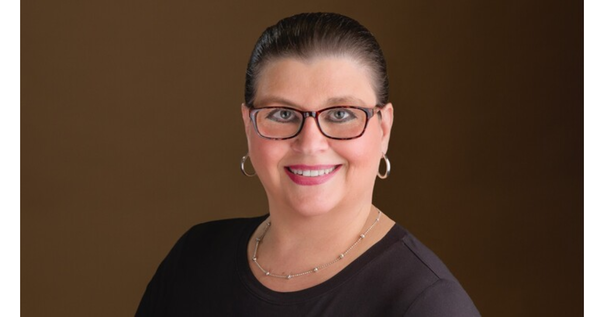

We spoke with Janet Downs, Senior Project Manager on WECMS about her expertise in Project Management, her experience at CivicActions, and why being a project manager is like being a willow tree.
What is your job at CivicActions?
In my current role as a Senior Project Manager, I focus on making sure our team and the client are always on the same page. I facilitate conversations, keep everything moving on schedule, manage any risks that pop up, and make sure important decisions are well-documented. Before this, I worked in contracts management, where I handled subcontract agreements and made sure all contract details were clear and followed. With this mix of experience, I help ensure our projects run smoothly, both technically and contractually.
What do you love most about CivicActions?
What I love most about CivicActions is their commitment to partnering with organizations that share their positive culture. They prioritize employee happiness, respect, and care, which has made my experience here truly enjoyable.
What led you to your current role at CivicActions?
I started my career back in 1998 as a technical writer because I always enjoyed writing and organizing things. I loved putting all the ducks in the right place, which came naturally to me — even as a kid, I kept my room neat, and everything had its place. These skills made me a natural fit for proposal management, where I had to pull together a whole lot of different pieces of information and make them sound like one cohesive voice.
From there, I transitioned into starting up contracts and programs, often wearing many hats in the early stages of a project. This led me into program management, which I’ve been doing ever since, though every role and client offers a different flavor of the work. Over the years, I’ve learned and applied various methodologies, like Agile and PMP. While Agile is more of a set of values and principles, it’s often grouped with methodologies. It’s definitely more efficient than the old waterfall style, where you plan everything from start to finish upfront, only to end up changing things along the way. Learning these approaches has developed my skills, helping me stay effective in managing projects.
What’s the most rewarding aspect of your job?
Seeing clients happy and knowing that my team did a great job is incredibly rewarding. We recently won a contract renewal, and it was a huge celebration for our team. After all the hard work, it was great to see our efforts recognized and to have the client pleased with our high-quality products. It’s the best feeling when you know you’ve done a great job and are rewarded for it.
What skills are essential for success in your position?
Being a successful project manager requires strong organizational skills and attention to detail, as the devil is in the details. You also need to be comfortable speaking to groups and adaptable in conversations, even when you can’t be fully prepared. Building good relationships is key, so it’s important to be respectful and ensure everyone feels heard. You should be flexible and adaptable, like a willow tree, rather than rigid like an oak tree. These skills are crucial for navigating the complexities of project management.
What do you find unique about the company culture at CivicActions?
CivicActions is really unique in how they keep everyone connected in a fully remote environment. One cool way they do this is through “donut chats,” a Slack bot that prompts you to schedule a meeting with a colleague you might not know well. It’s a great way to meet new people and have conversations you wouldn’t have had otherwise. For example, I got to connect with someone I might not have reached out to on my own, and we discovered we had a lot in common. It’s a fun and effective way to stay connected and build relationships, even when working remotely.
Join other mission-driven technologists like Janet at CivicActions by exploring our current job opportunities: civicactions.com/careers.